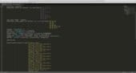
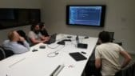

About the event / A place to share knowledge
Software Craftsmanship Barcelona is a two days event which aims to attract and connect software development professionals, who feel the passion for their work and share the values and principles of the Craftsmanship movement.
It aspires to be a meeting place which facilitates the magic of the learning, the teaching and the collaboration, where the participants create a gratifying and enriching experience
It does not matter what your level of knowledge is or which is your favorite programming language. We encourage you to participate
if:
- Feel passion for the software.
- want to be involved or are involved in
the Software Craftsmanship movement.
- want to share your knowledge, experience,
or skills.
- have the spirit to learn and improve by helping or sharing with others.
In addition to technical contents, it will be fun, there will be beer, and we'll
have stimulating conversations until who knows what hours. Software Craftsmanship Barcelona
is an opportunity to meet new friends, face new challenges, to learn and to improve your
skills. Join us!


Schedule
Here you have the PDF version ready to download. It could be useful to easily compare the talks taking place in the different tracks.

The talk focuses on architectural changes and new tools we should adopt to be able to tackle the problems presented by a demand for modern, responsive, fault tolerant and elastic systems. It is based on the material published in The DevOps 2.1 Toolkit: Building, testing, deploying, and monitoring services inside Docker Swarm clusters.
The talk will go through the whole microservices development lifecycle. We’ll start from the very beginning and define and design architecture. From there on we’ll move from requirements, technological choices and development environment setup, through coding and testing all the way until the final deployment to production. We won’t stop there. Once our new services are up and running we’ll see how to maintain them, scale them depending on resource utilization and response time, and recover them in case of failures. We’ll try to balance the need for creative manual work and the need to automate as much of the process as possible.
The goal is to design a fully automated continuous deployment (CDP) pipeline. We’ll see how microservices fit into CDP and immutable containers concepts and why the best results are obtained when those three are combined into one unique framework.

TDD es una parte importantísima de mi flujo de trabajo cuando desarrollo software. Con el paso de los años he modificado la forma en la que lo aplico, he aplicado distintas técnicas y he experimentado distintas formas de escribir mis tests para tratar de sentirme lo más productivo posible. Dar con un flujo de trabajo que me resulte cómodo, trabajar en el nivel de abstracción y con la aproximación adecuada no ha sido fácil y aún así tengo claro que estoy lejos de haber encontrado una fórmula ideal.
Elegir entre una aproximación outside-in vs inside-out, qué tipos de dobles de prueba utilizar, escribir tests que no requieran más mantenimiento que el propio código de producción son algunos de los retos a los que podemos tener que enfrentarnos cuando aplicamos TDD en nuestro día a día.
En esta charla quiero hablar de cómo aproximo mi trabajo cuando desarrollo aplicando TDD. No se trata de una charla introductoria ni de evangelización sobre las virtudes de TDD, no se tr

La simplicidad, o el arte de maximizar la cantidad de trabajo no realizado, es esencial. Principios del Manifiesto Ágil
La simplicidad es la base de la programación extrema. Se simplifica el diseño para agilizar el desarrollo y facilitar el mantenimiento. Un diseño complejo del código junto a sucesivas modificaciones por parte de diferentes desarrolladores hacen que la complejidad aumente exponencialmente. XP / Programación Extrema Wikipedia
Para lo importante que es este principio del Manifiesto Ágil y el valor de Simplicidad en XP, creo que lo tenemos muy poco en cuenta y o incluso tenemos la tendencia contraria, generando soluciones complejas no proporcionales al problema a resolver.
Simple no es lo mismo que fácil, ni lo mismo que conocido y requiere de bastante experiencia en reconocer soluciones simples y aplicar distintas soluciones a distintos problemas.
Todo sistema tiene una complejidad inherente al propio problema y complejidad accidental que introducimos los desarrolladores por no entender el problema, por comodidad o porque simplemente no sabemos hacer bien nuestro trabajo.
Esta charla se focaliza en empezando por las 4 reglas del diseño simple de Kent Beck y continuando con algunos ejemplos de diseño a alto nivel, ayudar a los desarrolladores a identificar y a generar diseños simples.
No nos engañemos, que un sistema esté preparado para evolucionar no significa que tenga millones de puntos de extensión, sino que sea fácil de extender y mantener, para lo que es necesario que se pueda comprender y que tenga la mínima complejidad necesaria (la complejidad inherente al problema).
Digamos adiós a las Megaconstrucciones y las soluciones técnicas que escribimos para satisfacer nuestro propio ego como desarrolladores.
Somos ágiles:
“Keep it Simple, make it valuable, build it Piece by Piece” Ron Jeffreis, The Nature of Software Development.

Estamos acostumbrados a hablar de la calidad del código "de producción", pero ¿qué hay de la calidad de los test? ¿Cómo medimos si son buenos o malos?
En esta sesión veremos problemas comunes que nos encontramos al empezar a testear, cómo evitar malas prácticas, y daremos nuestra opinión acerca de los tipos de test que más valor aportan.
Por último, también hablaremos del encaje del testing en una aplicaciones CQRS y DDD (Arquitectura Hexagonal).
Para demostrar que son principios agnósticos del lenguaje, los ejemplos de código serán tanto en Scala como en PHP.


Vivimos tiempos moviditos en el frontend, pestañeas y te aparecen un par de nuevos framework javascript anunciados en hacker news.
Entonces ¿qué hacemos? ¿elegimos un framework, vamos a fuego y ya si vemos que la hemos cagado lo tiramos y re-escribimos todo? ¿O tal vez podamos tirar de conceptos viejos para minimizar esto?
En esta charla hablaremos de cosas nada modernas: SOLID, TDD, arquitectura hexagonal... en la que mostraremos algunos ejemplos prácticos.


Unit testing can sometimes be tedious to write, hard to maintain, difficult to get good coverage and in some cases its difficult to come up with random (edge cases) unbiased examples. Random testing based on properties can complement unit testing and in some cases even replace them completly.
This talk is a introduction to radom testing, how to define and use properties to test code.

Siempre que se nos habla de calidad de código y de Buenas Prácticas de programación se presentan una serie de recomendaciones que, muchas veces acabamos olvidando cuando las prisas o el desconocimiento de una tecnología aprieta.
En esta charla, utilizaremos la aproximación contraria: Partiremos de pequeños fragmentos de código extraídos de proyectos reales e indicaremos porqué son malas prácticas. Algunos de estos ejemplos de código procede de proyectos grandes opensource (todo el mundo echa un borrón de cuando en cuando).
También mostraremos cuales son los conceptos de diseño y daremos las recomendaciones para evitar caer en estos problemas.
La charla será amena y divertida, basada principalmente en Java (aunque habrá algo de otros lenguajes), en la que procuraré que, a través de las anécdotas y estos casos extremos, podamos recordar las buenas prácticas de desarrollo que deberíamos tener siempre presentes.

A todos nos ha pasado que hemos leído un tutorial de programación declarativa (aka funcional),
pero después llegamos a un código real y no sabemos ni como empezar a usar esos conceptos. A nosotros
nos pasaba lo mismo. Después de mucho luchar, muchas iteraciones y pedir mucha ayuda a gente
más buena que nosotros, hemos aprendido a allanar el camino hacia la programación declarativa de manera
pragmática, poco a poco y sin irnos por las ramas. Llegados a este punto, creemos que otra gente
se beneficiaría de este conocimiento.
En esta charla vamos a refactorizar una aplicación con casos de uso reales partiendo
de una base imperativa. Nuestro objetivo será ir puliendo la lógica de éstos hasta
llegar a una implementación declarativa fácilmente entendible, y, a la vez, más robusta
ante los dichosos 'side-effects'.
Al terminar, queremos que los asistentes:
- - Sepan las ventajas y desventajas de usar este estilo de programación.
- - Entiendan que la curva de aprendizaje a nivel de lógica es menor, a cambio de una mayor complejidad de implementación.
- - Pierdan el miedo a conceptos matemáticos como Monad Transformers, explicándolos con pragmatismo.
- - Vean que se puede usar la programación declarativa en cualquier caso de uso real, no solo en proyectos de juguete.


When embracing Java 8 we walk down the yellow brick road to the wizard of lambdas. That road usually starts from the fear and terror of learning their syntax until finally getting to understand them and opening our minds to the fruitful fields of functional programming. But this road eventually reaches a final stage: the lambda abuse.
To master the lambdas art means to know when to use them and when not to not damage your brain and, most importantly, other Java developers’. Keep your code readable and maintainable, avoid becoming a lambda addict!

CSS no es un lenguaje de programación, pero no por eso tenemos que hacer las cosas mal. El término Software Craftsmanship ha sigo acogido por la comunidad como definición de una metodología de desarrollo acorde a: un software bien diseñado, agregar valor constante, comunidad de profesionales y asociaciones productivas.

Iniciación a la UX y presentación de técnicas y herramientas para la co-creación de la experiencia de usuario. Aportaré una visión de la disciplina como etiqueta propia de todos los roles y con acercamiento específico al rol developer.

¿Qué ventajas tiene la separación entre el modelo de escritura y lectura que propone CQRS? ¿Realmente tiene sentido? ¿Cómo realizamos una integración con un sistema externo sin depender de él y desacoplado? ¿Cómo podemos aprovecharnos de la consistencia eventual? ¿Cómo se aplica todo esto en un proyecto real?

Se trata de explicar, desde un punto de vista de arquitectura, infraestructuras, y prácticas de desarrollo, cómo descomponer un monolito basado en Drupal y convertirlo en una colección de servicios autónomos, cada uno con su propio stack de tecnologías, y sin que los usuarios perciban ni un segundo de caída en el servicio.

Architectural Katas is an exercise created by Ted Neward. Similarly to code katas, the role of this session is to practice and became better at software architecture. The exercise normally consists on groups of 3 to 5 people, each one of them doing a different kata. The group will discuss options and sketch what a possible solution may look like. The moderator assigns the katas and acts as a "customer" answering questions from the teams. At the end, the teams present their solution to the other teams in the room, and answer challenges (in the form of hard-but-fair questions). This session is open to everyone, from seasoned architect to junior developers. The main goal is to practice our architectural skills by learning from each other. The original Kata is described here (https://archkatas.herokuapp.com/about.html).

Let's learn about useful Machine Learning algorithms, invoking them from common libraries (pandas & scikit-learn). The session starts with a brief introduction to ML and the different approaches we can apply. After that we will practice exploring real datasets, cleaning and optimizing the data, and using ML algorithms to find hidden insights. NO need to know about maths, machine learning, nor python; this is an introductory but profitable workshop!

Kubernetes is an orchestration tool created by Google aiming to control containerized applications at the cluster level. People used to say the entry level is hard but I hope to demonstrate how you can build an application from scratch using good practices.

We'll talk about our experience developing an SPA' browser and native versions that share 90 sth % of their code using React and ReactNative and about the advantages of using a functional language like ClojureScript combined with the re-frame framework which has an architecture similar to Redux but with great conceptual improvements such as effects and coeffects that improve testability by eliminating the need of mocking inside the SPA business logic, or reactive subscriptions which make views dumber and can also reduce the number of renderings.

A core mission of the software craftsmanship movement is to promote modern practices within the tech industry, like TDD and pair programming. Software, however, is only one part of the craftsmanship puzzle: our manifesto also speaks of professionalism and partnership.
When it comes to diversity and inclusion, our industry has an abysmal track record. Some of us in the craftsmanship community are actively working to make a difference. We believe that if craftsmanship is to remain relevant into the 2020s and beyond, we must tackle this issue head-on.
In this talk I’ll look at what key players in the software craftsmanship community have been doing to improve diversity, why it’s important we all participate, and what you can do to help.

In this talk I'd like to share some thoughts on how we learn best practices, and, specifically, how different learning mechanisms are better for different moments along the way.

When we think of a Linux distribution, most of the time we think of a graphical Interface. We can install the needed packages using some tool the distribution provides us. From time to time we get updates. Everything works (hopefully) out of the box.

ACID transactions in a monolithic application are a great, powerful and simple tool, that helps us guaranteeing data consistency inside our application.
But... what happens when we move from monolithic applications to distributed systems? We don't have a single database or ACID transactions anymore, and there is also a choice to make regarding the CAP theorem. But... is all hope lost? Or can we still somehow have transactions across service boundaries?
In this talk we will try to understand that complexity, see some alternatives, and how the SAGA pattern comes to the rescue here.

Developing server-side code has more alternatives other than one-process per request or one-thread per request. In this talk we'll see what the actor model is, when it's a good fit, and specially how it can help you discuss the business with non-developer members of your team.

The software craftsmanship movement started 8 years ago. What happened since? Has anything changed? Where is this movement? What is Software Craftsmanship anyway? In this session Sandro will be talking about the past, present and future of the Software Craftsmanship movement and how it is changing the way developers and companies think about software.

One day, you learn that you will be responsible for the company’s externally facing API.
It is a strategic product for the business and expected to have more and more users in the next few months. However, you also know that the existing API has various performance problems and multiple clients have been complaining. Where would you start?

Main goal of the talk is to expose, elaborate and show examples from my own experience on the Dungeon Master (DM)

Vivimos en una sociedad acelerada, donde las rutinas y la inercia del día a día hacen que no seamos dueños de nuestras vidas.
Aunque no acabemos de estar satisfechos con nuestro trabajo, el miedo al cambio, al rechazo y al fracaso hacen que no tomemos ninguna acción para mejorar nuestra situación.
Ir más lentos, aprender a decir a ‘no’ y deshacernos de lo que no nos aporta nos ha permitido disfrutar con nuestra profesión, tener claro nuestras prioridades, compaginar la vida profesional con la personal, conseguir mejores clientes y desarrollar proyectos de forma sostenible.
En esta charla compartiremos cómo hemos ralentizado nuestro ritmo para ser más conscientes de nuestras necesidades, tomar mejores decisiones y ser felices.


After several years in the Curtain Wall industry (façades for high-end architecture) and projects in several continents, Anna found herself in need of a complete change and had to move on to Recycling. Few years later, she, again, found herself in need of a change and landed into a job she'd never thought she was capable of fulfilling.
This talk is the first hand experience of a (real) engineer turning her professional life upside down and becoming a software engineer.

La deuda técnica existe, y quien diga lo contrario miente.
De hecho, raro es el proyecto en el que uno aterriza y está todo como si lo hubiera escrito el mismísimo Uncle Bob. Ahora bien, ¿Qué pasa si el desaguisado es tal que el propio proyecto se hace inmanejable? ¿Cómo podemos explicar al cliente que hay que invertir parte del presupuesto en deshacerlo? Esta charla pretende dar algunas ideas que esperamos os sean útiles sobre cómo, cuándo y por qué puede ser necesario vender un proyecto de refactoring sin necesidad de sacar una navaja (^_^)


Why should you invest in Continuous Delivery?
It's expensive, requires tecnical expertise, time and machines...
The problem is that without CD you are walking around with a hole in your pocket and the hole is getting bigger...
This presentation focusses on the 3 main reasons why the hole is there... and growing. They are the ABC of Continuous Delivery:
- - Amplification: Deploying takes more time the longer the time between deploys.
- - Bugs: Bugs are more costly to fix the longer ago they were introduced.
- - Cost of Delay (CoD): The longer you take between deploys, the longer your cost of delay
In the model we present, one can see the costs of integration and deploy are super linear to the number of changes to integrate. In Software Development, the commits that are not yet in production are inventory... and inventory is waste.

Infrastructure as Code, WTF? Have you heard that concept but never seen it applied? Are you asking yourself if it deserves your time or if it is worth for your business? I'll try to solve your doubts about it and we will be doing a little Workshop with one of the tools that we can use (Terraform).
To follow the workshop properly the following will be needed:
- - A laptop (with *nix preferably)
- - An Azure account: https://azure.microsoft.com/free/
- - An AWS account: https://aws.amazon.com/free/
- - A code editor installed
- - A git client installed
- - Terraform installed: https://www.terraform.io/intro/getting-started/install.html

¡Frena! ¿Cómo vas tan rápido por una carretera con curvas? Muchas veces los desarrolladores conducen a lo loco por su carrera programando sin aprender las técnicas adecuadas de conducción. ¿El resultado? Muchos accidentes...
La motivación de esta charla es presentar un catálogo de principios de diseño de programación orientada a objetos con ejemplos que permitan entenderlos. ¿El objetivo? Evitar accidentes.
Veremos algunos principios como KISS, DRY, POLA, SOLID, SoC, YAGNI, LoD, HP, CRP, TDAP, entre otros...

Serverless es la nueva palabra de moda en el mundo del desarrollo. Y lo es por una buena razón: las arquitecturas serverless nos permiten centrarnos en la lógica de nuestro negocio, y preocuparnos menos de nuestra infrastructura. En este workshop daremos una breve introducción a las arquitecturas serverless y luego nos pondremos manos a la obra para desarrollar una solución utilizando:
- - AWS Step Functions
- - AWS Lamba
- - .Net Core (C#)
- - Javascript
- - Python
- - Serverless framework
- - Crear una Lambda function utilizando C#, JavaScript y Python.
- - Deployar y testear Lambdas utilizando el framework Serverless
- - Crear, deployar y testear una Step Function con diferentes tipos de pasos

Diversity Matters / We welcome you
For those of you who feel part of an underrepresented group in tech, we welcome you.
We want to support you by reserving tickets for 50 people on the first ticket sale wave. This includes (but is not limited to): people of colour, disabled people, LGBTQIA+ people and women.
Sponsorship plans
Here you have the Collaboration Pack with all the available sponsorship plans. Take into account that we've already sold out the event tickets. So the sponsorship plans doesn't include tickets for the new sponsors in order to guarantee the good experience of the atendees.
We really appreciate this year sponsors for their support. Here you have the complete list:
Venue Sponsor


{kind=link}
{kind=link}
{kind=link}
Code of Conduct
All attendees, speakers, sponsors and volunteers at our conference are required to agree with the following code of conduct. Organizers will enforce this code throughout the event. We are expecting cooperation from all participants to help ensuring a safe environment for everybody.
Location
The Annual Software Craftsmanship Conference has available a discount for long-medium distance trains (RENFE), if you are interested, please, send us an email and we will send you the discount information.